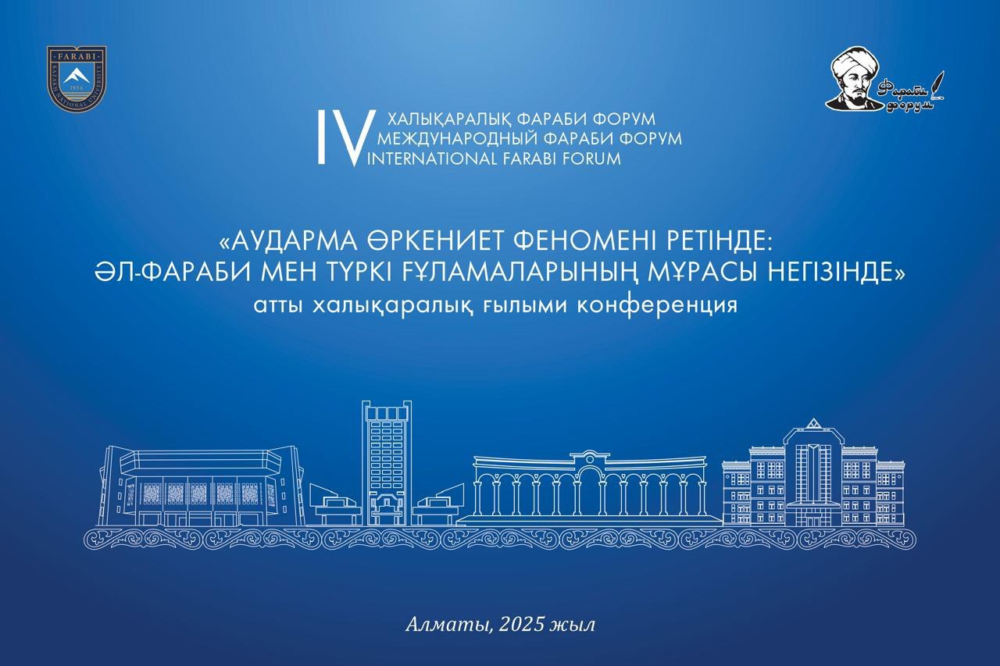

International Scientific Conference
“TRANSLATION AS CIVILIZATION PHENOMENON:
BASED ON AL-FARABI’S LEGACY AND TURKIC SHOLARS”
April 2, Absattar Derbisev Conference-hall
- 15:00 - 16:50 PLENARY SESSION
- 15.00 - 15.10 Bekzhan MEYIRBAEV – Strategic directions for revitalizing the exploring of Al-Farabi's legacy
- 15.10 - 15.20 Nagima BAITENOVA – Rumi's Sufi philosophy in global spiritual exploration and development
- 15.20 - 15.30 SHUAYBU Umar Goharu – The influence of Al-Farabi on translation: an intellectual perspective
- 15.30 - 15.40 Samal TOLEUBAIEVA – The paradigm of translation in reading the text of Farabi
- 15.40 - 15.50 Klara Tazhikova – Abu Nasir al-Farabi on the importance of translation in human scientific and cognitive activities
- 15.50 - 16.00 Aynur Kurbanaliyeva – The importance of studying Al-Farabi's heritage in the formation of philosophical terminology in Kazakh language
- 16.00 - 16.10 Fakhime Reza Shakiba – The ideal city leader in the thoughts of Al-Farabi and Ibn Sina
- 16.10 - 16.20 Asset Kuranbek – The course "Al-Farabi and Modern Times": Content, Features, Importance
- 16.20 - 16.30 Anami Mahmoud – Abu Nasr al-Farabi's Contribution to the Development of Science and Philosophical Thought
- 16.30 - 16.40 Abai Duisebaev – Ethno-pedagogical views in the educational heritage of Turkic scholars
- 16.40 - 16.50 Aliya Omirbekova – The heritage of Al-Farabi in establishing national consciousness
- 16.50 - 17.00 Timur Nuspikhanov – The Importance of Theological Literature in the Field of Deradicalization
- 17.00 - 17.10 Signing of a memorandum of cooperation between the Faculty for Philosophy and Political Science of Al-Farabi Kazakh National University and the "IHSAN" Science and Culture Center
- 17.10 - 17.20 On behalf of the "IHSAN" Science and Culture Center, donating books to the Scientific Library of Al-Farabi Kazakh National University
- 17.20 - 17.30 Memorial photo
- April 3, 10:00, №123 Section No.1. The role of al-Farabi's legacy in the formation of philosophical terminology in kazakh language
- April 3, 10:00, №126 Section No.2. Translation - the basis of dialogue between western and eastern civilizations
- April 3, 10:00, №120 Section No.3. The role of al-Farabi's heritage in establishing national consciousness and unity
- April 3, 10:00, №124 Section No.4. The relevance and continuity of al-Farabi's intellectual heritage in Kazakhstan's social and humanities sciences
International Scientific Conference “TRANSLATION AS CIVILIZATION PHENOMENON: BASED ON AL-FARABI’S LEGACY AND TURKIC SHOLARS”
SECTIONAL MEETINGS
- Section No. 1. THE ROLE OF AL-FARABI'S LEGACY IN THE FORMATION OF PHILOSOPHICAL TERMINOLOGY IN KAZAKH LANGUAGE
Moderator: Klara TALKOVA
Secretary: Marzhan ALIKBAEVA - Section No. 2. TRANSLATION - THE BASIS OF DIALOGUE BETWEEN WESTERN AND EASTERN CIVILIZATIONS
Moderator: Mira BALTYMOVA
Secretary: Aydingul KHAVAN - Section No. 3. THE ROLE OF AL-FARABI'S HERITAGE IN ESTABLISHING NATIONAL CONSCIOUSNESS AND UNITY
Moderator: Aliya OMIRBEKOVA
Secretary: Samet BAIZHUMA - Section No. 4. THE RELEVANCE AND CONTINUITY OF AL-FARABI'S INTELLECTUAL HERITAGE IN KAZAKHSTAN'S SOCIAL AND HUMANITIES SCIENCES
Moderator: Nagima BAITENOVA
Secretary: Abai DUYSENBAEV